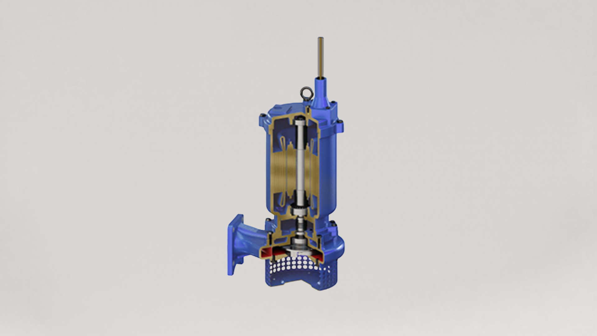
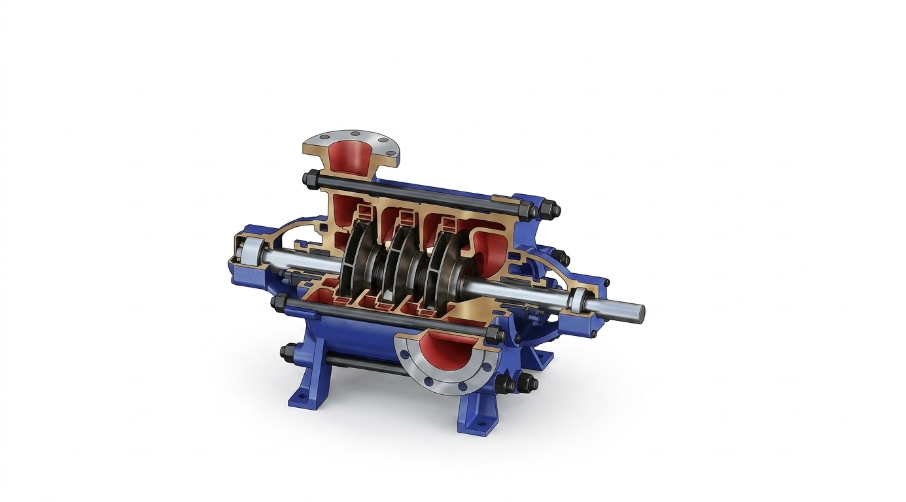
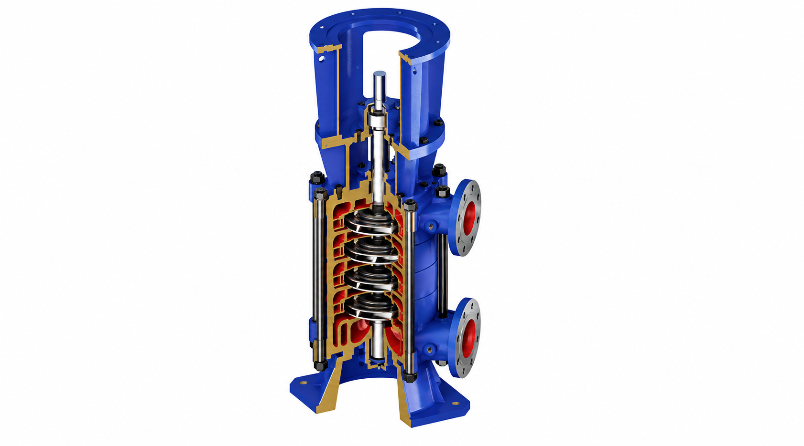
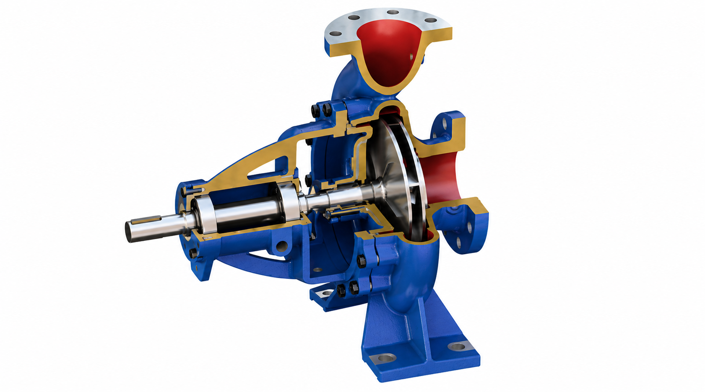
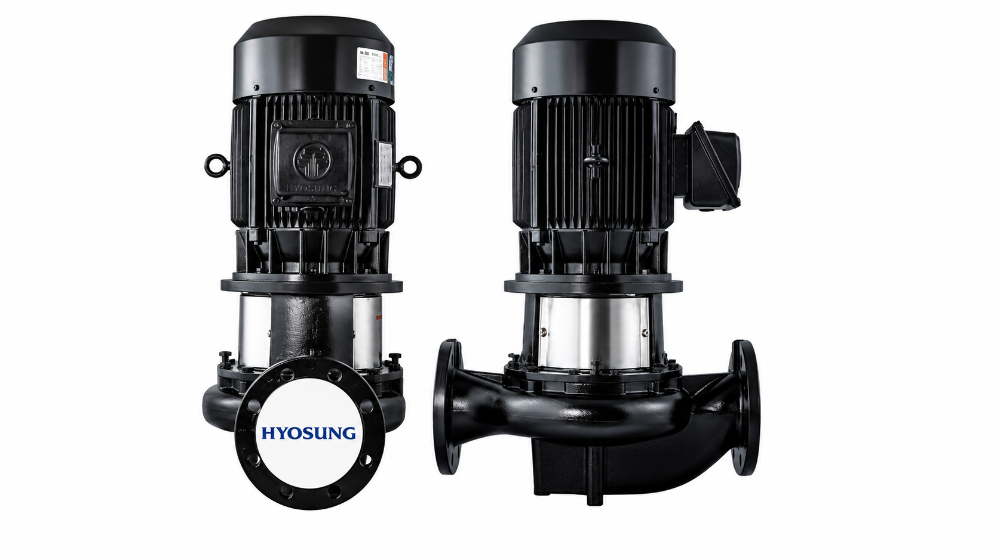
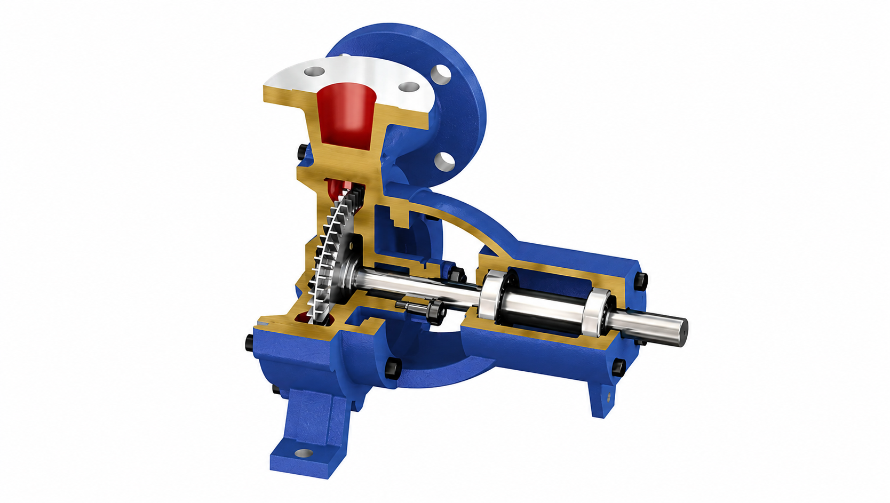

📞 032.347.0815~7
한국그런포스펌프(주) 프리미엄 공식 대리점 | 1995년 설립
✉ hyoilpump@daum.net
케이원펌프(주)의 산업용 및 건축 설비용 펌프 시스템입니다. 부스팅, 순환, 배수, 소방 등 다양한 용도에 최적화된 고성능 펌프를 제공합니다.








* 모델 및 옵션에 따라 사양이 달라질 수 있습니다.
케이원펌프(주)는 산업용 및 건축 설비용 펌프 시스템 전문 기업으로, 국내 대표 펌프 제조 기업인 효성굿스프링스의 대리점입니다. 제품 공급부터 기술 지원 및 유지관리까지 전문 서비스를 제공하고 있습니다.
제품 문의하기 →